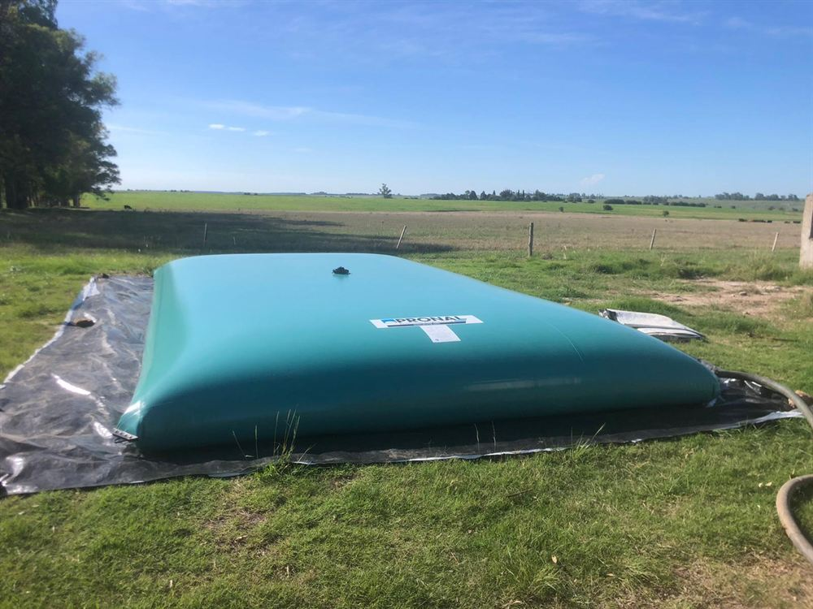

Professzionális tárolás
Flexibilis tartályok folyékony műtrágyákhoz
Flexibilis tartályokat kínálunk folyékony ásványi műtrágyák tárolására mezőgazdasági termelők, elosztóközpontok és ipari létesítmények számára. PVC-bevonatú műszaki szövetből (1300 g/m²) készülnek, nagyfrekvenciás hegesztéssel, ami hosszú élettartamot és vegyi ellenállóképességet biztosít a folyékony műtrágyákkal érintkezve.
A teljesen zárt szerkezet védi a tartalmat az időjárás hatásaitól és a nem kívánt hígulástól, a rugalmas felépítés pedig gyors és egyszerű telepítést tesz lehetővé sík felületre, beton- vagy acélszerkezetek nélkül.
A 100 m³-es kapacitás kb. 350 ha-ra elegendő.
| Anyag | nagy szilárdságú szövet, 1300 g/m² |
|---|---|
| Bevonat | kétoldali PVC |
| Méretek | szabványos vagy egyedi, a vevő igényei szerint |
| Összeállítás | nagyfrekvenciás hegesztés kiegészítő élvédelemmel |
| Hőmérséklet-állóság | −30 °C-tól +70 °C-ig |
Szerelvények és tartozékok
- hegesztett DN 140 nyílás gázkieresztő szeleppel
- DN 80 túlfolyó könyök szimmetrikus csatlakozóval és dugóval
- DN 50 negyedfordulatos guillotine-zár szimmetrikus csatlakozóval és dugóval
- 4 megerősített sarok
- javítókészlet
- hőszelep-védelem